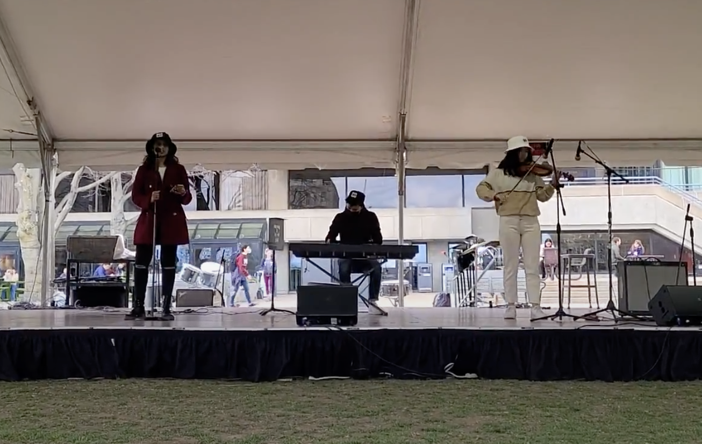

Allen Wang
about
projects
Hi there, I'm Allen! I help companies collect their environmental data and manage their resources at Nectar.
Previously, I studied at MIT where I helped organize HackMIT as Dev Head, where I managed teams and
shipped open source tools. I was at some point the Co-President of MIT Poker Club.
I love meeting folks from all walks of life. Come say hi 👋 and email me!
What are you up to now?
I spend most of my days building Nectar where I write software, help large companies with their environmental resources, and meet brilliant minds who are dedicating their lives to solving climate change.
What do you do for fun?
A mélange of things... I enjoy reading about science and how people
think.
I get excited about making useful things for people and creating cultured communities. I like
impressing
tipsy teammates with my mediocre card magic, making music with friends, and occasionally writing.

three bucketeers